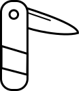

Pocketknife
A language for getting things done
Pocketknife is a programming language with a unique but readable syntax designed to help you solve problems.
It works like a flow chart, passing data from input to output and transforming it along the way. If you can describe your problem as a series of steps, pocketknife can probably help you.
It's aim is to be something in between the shell and a python script. Solve a problem, throw it away, move on.
>range -50 100
|mul 2
|abs
^
Licensed under something, mit maybe?
Source: GitHub